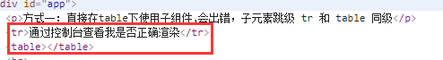

一、 解析DOM模板时的注意事项
有些 HTML 元素，诸如 <ul>、<ol>、<table> 和 <select>，对于哪些元素可以出现在其内部是有严格限制的。而有些元素，诸如 <li>、<tr> 和 <option>，只能出现在其它某些特定的元素内部。
这会导致我们使用这些有约束条件的元素时遇到一些问题。例如：
1
2
3
| <table>
<tr-item></tr-item>
</table>
|
这个自定义组件<tr-item>会被作为无效的内容提升到外部，并导致最终渲染结果出错。

幸好这个特殊的 is attribute 给了我们一个变通的办法：
1
2
3
| <table>
<tr is="tr-item"></tr>
</table>
|
需要注意的是如果我们从以下来源使用模板的话，这条限制是不存在的：
- 字符串 (例如：template: ‘…’)
- 单文件组件 (.vue)
<script type="text/x-template">
例如:
1
2
3
4
5
6
7
8
9
10
11
12
13
14
15
16
17
18
19
20
21
22
23
24
25
26
27
28
29
30
31
32
33
34
35
36
37
38
39
40
41
42
43
44
45
46
47
48
49
50
| <!DOCTYPE html>
<html>
<head>
<meta charset="utf-8" />
<title>Vue解析DOM模板时的注意事项</title>
<script src="https://cdn.staticfile.org/vue/2.4.2/vue.min.js"></script>
<script type="text/x-template" id="todo-four">
<table><tr-item></tr-item></table>
</script>
</head>
<body>
<div id="app">
<p>方式一：直接在table下使用子组件,会出错，子元素跳级 tr 和 table 同级</p>
<table>
<tr-item></tr-item>
</table>
<hr />
<p>
方式二: is="" 的方式可以避开一些潜在的浏览器 **解析规则** ，正确渲染元素
</p>
<table>
<tr is="tr-item"></tr>
</table>
<p>方式三：通过template字符串</p>
<todo-three></todo-three>
<hr />
<p>
方式四：通过<i><</i>script type="text/x-template"
id="todo-four"><i><</i>/script>
</p>
<todo-four></todo-four>
</div>
<script type="text/javascript">
Vue.component("tr-item", {
template: "<tr>通过控制台查看我是否正确渲染</tr>"
});
Vue.component("todo-four", {
template: "#todo-four"
});
const vm = new Vue({
el: "#app",
components: {
"todo-three": {
template: "<table><tr-item></tr-item></table>"
}
}
});
</script>
</body>
</html>
|